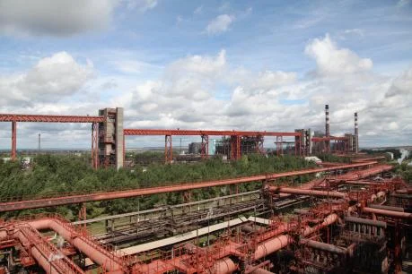

Комплекс цеха улавливания предназначен для отвода коксового газа от печей коксовых батарей 1-4, охлаждения его с выделением конденсирующихся смолы, воды, извлечения из газа аммиака, бензола, пиридина.
Цех улавливания
В процессе коксования образуются ценные химические продукты, являющиеся основным сырьем для многих химических производств и особенно предприятий органического синтеза. Очистка выделяющегося при коксовании газа с улавливанием ценных химических составляющих осуществляется в одном из основных цехов завода — цехе улавливания химических продуктов коксования.
- - отделение конденсации и охлаждения коксового газа;
- - аммиачно-сульфатное отделение с пиридиновой установкой и складом сульфата;
- - склад реактивов;
- - бензольное отделение;
- - очистка обратного коксового газа для отопления батарей;
- - биохимическая установка для очистки сточных фенольных вод;
- - установка утилизации химических отходов;
- - склад смолы, масел и сырого бензола;
- - установка по приготовлению тяжелой смолы (дорожного связующего).
В состав цеха входят:
Обработка коксового газа осуществляется по следующей схеме:
Парогазовые продукты, выходящие из камеры коксования с температурой 750-800с С, сначала подвергаются охлаждению до 85-90°С аммиачной водой, которая подается из отделения конденсации в газоотводящую арматуру. В газосборниках коксовой батареи при этом конденсируется до 60% смолы.

Затем газ, содержащий еще значительное количество смоляного тумана, так называемый «прямой коксовый газ», поступает в первичные газовые холодильники, назначение которых снизить его температуру до 30-35°С. По мере охлаждения прямого коксового газа из него конденсируются смола и вода.
Все сконденсировавшиеся продукты поступают в аппараты (осветлители), где смола отделяется от воды. Вода насосами снова направляется на охлаждение парогазовых продуктов в газоотводящей арматуре и газосборниках коксовых батарей.
После конечного охлаждения коксовый газ с коксовых батарей 1-4 поступает в отделение улавливания сырого бензола. Улавливание сырого бензола осуществляется путем контактирования газа с поглотительным маслом, приготовляемым из фракции каменноугольной смолы, в скрубберах, в которых уложена деревянная реечная насадка. Насадка скруббера сверху орошается поглотительным маслом, навстречу маслу из нижней его части поступает коксовый газ. Выходящий из бензольных скрубберов коксовый газ, т.е. газ, прошедший все стадии очистки, называется «обратным». Это конечный продукт, который может передаваться потребителю (обогрев коксовых батарей, трубчатых печей, гаражей размораживания, ТЭЦ и др.).
Основными источниками выбросов в цехах улавливания являются воздушники емкостного оборудования, аспирационные и вентиляционные системы в насосных и других производственных помещениях, узлы погрузки, разгрузки продуктов, открытые поверхности емкостей, дымовые трубы трубчатых печей.
Значительное количество воздушников емкостного оборудования отделения конденсации и склада смолы подключены к коллекторной системе с подачей коллекторных газов в газопровод прямого коксового газа. Воздушники технологического оборудования установки по переработке смолы подключены к коллекторной системе сбора выбросов с подачей коллекторных газов в газопровод прямого коксового газа.